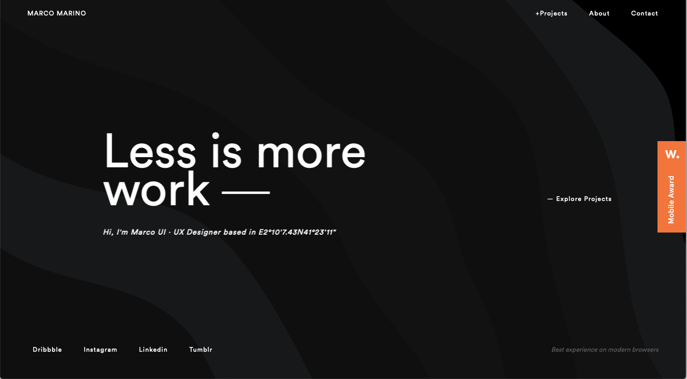
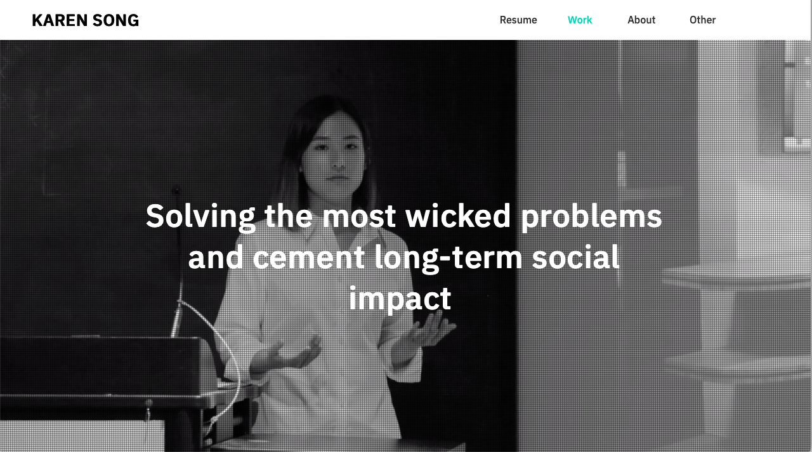
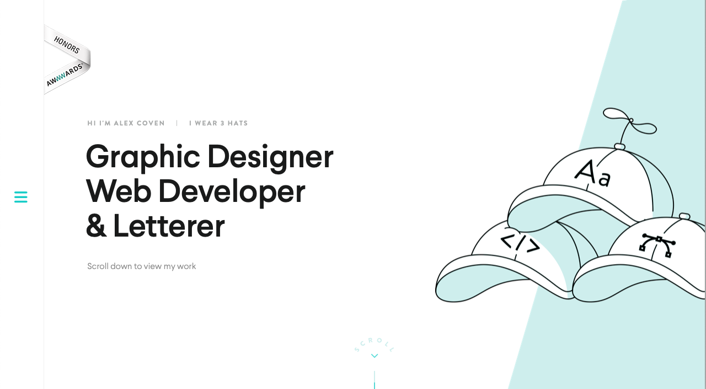

Good Portolio Websites

The aesthetics of this website are great. It is very visually pleasing and easy to understand. The first place my eyes focus on without scrolling is the part that says, “Less is more work” and the moving background. I think it is very cool. I don’t know as though that quote is really working for him. I definitely think that was the first thing he wanted his viewers to see and then look to the edges for all the navigation ideas. The layout helps illustrate the journey of where you should go. The first thing of the navigation is for you to explore his projects. From there, you see social media links, as well as an about and contact. The colors work great together. The fonts are all legible and font weights are being used effectively. I enjoy that it is not a scroll through menu. I actually do not like those. My favorite part of his portfolio is the projects page. When you hover over the name of the project, it shows a picture of what the project looks like. I have never seen anything like this before. It is very nice! The navigation is easy to understand and straight to the point, especially since there are not drop down menus - only the important things are featured. There is a call to action in the navigation as well. The website loads very fast and is responsive. Overall, the website helps us understand who he is, what he does, and how we can utilize his skills for what we need.

Her website is very fresh and visually pleasing! You can tell she knows what she is doing. It looks very professional and lets you know exactly what she can do. The first thing you see is a video of her hard at work. It makes it personal and puts a face to the name even more than a photograph can do. The layout is easy and takes you on a journey of what you can do. The navigation is on the top right and is all out to be seen so it is known what you can view. From the navigation she has easy to understand options. You can download her resume and it opens in a new tab, which makes it so much easier to see and use. The call to action buttons are easily seen and understood. The black and white layout, with the pop of color makes it easier on the eyes. All pages on the site are cohesive and work together rather than against each other. She uses a contrast color background to show what is separated and connected between the site pages. The portfolio is responsive and loads very quickly. All the content is of value is and is not overflowing with unnecessary information.

This website is very funny! I love how he says, “I wear 3 hats”. It is funny to me because it is so true, when you are a graphic designer you can do so many different things and graphic designer just doesn't do it justice. While I don't like the scroll down design of his website, I love everything else. My favorite part is the way the navigation opens on the left, and almost makes a new part of the page. Another part of this navigation that is amazing is the part where he puts his services. This makes it so you know exactly what he can do, this is beneficial from him and the viewer. I wish there was a place for his work in the navigation menu as well as on the scroll down of the home page to make it easier to view. When opening the page the first thing you see if his name, and his job tittle. This makes it so easy to understand what you expect to see. The site is professional looking, well put together and the black and white with a pop of color and the font scheme works well to pull it all together. There is only one dropdown level, which makes this very easy to understand and does not overload the information that is available on the site. The website loads fast and is responsive.